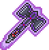

Cursed Hammer
| Drops | |
|---|---|
| Coins: | 10 |
| Cursed Hammer | |
|---|---|
|  | |
| Statistics | |
| Type | Corrupted Enemy Flying Enemy |
| Environment | Underground Corruption |
| AI Type | Flying Weapon |
| Damage | 80 |
| Max Life | 200 |
| Defense | 18 |
The Cursed Hammer is a somewhat rare enemy from the Underground Corruption biome. These cursed hammers have a simple attack pattern; they spin several times, then fly straight at the player. Any knockback cancels their attack and forces them to spin again.
Cursed Hammers can inflict the Cursed debuff, and their Hallow counterpart is the Enchanted Sword.
History
- 1.1: Introduced.